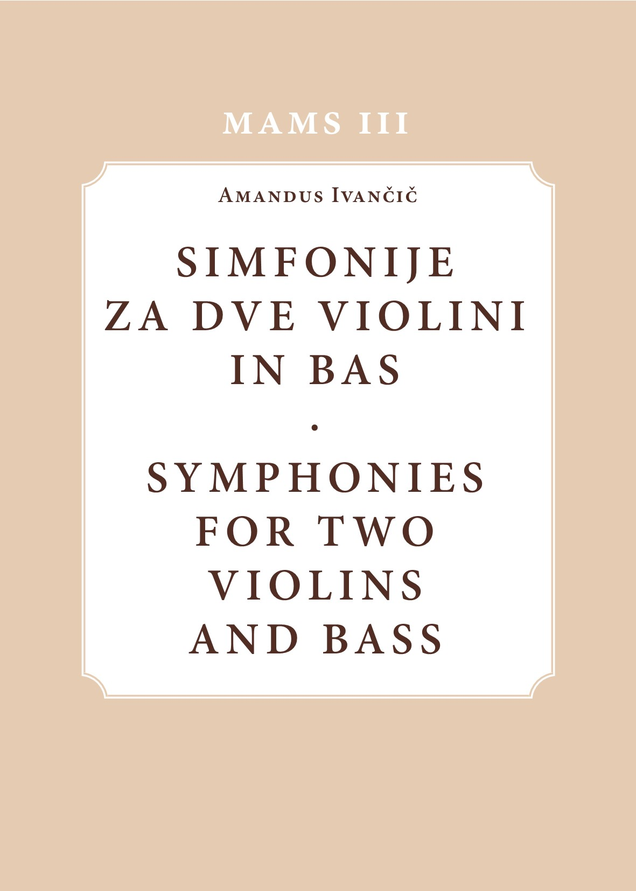

Amandus Ivančič
Prva spletna izdaja / First Online Edition

ZRC SAZU, Muzikološki inštitut, SAZU
Ljubljana
2020
Amandus Ivanschiz (Ivančič) sodi med danes manj znane skladatelje 18. stoletja, čeprav je bil v svojem času razmeroma močno prisoten v srednjeevropskem glasbenem prostoru. O tem priča ok. 200 njegovih skladb, ki so se v prepisih ohranile širom srednje Evrope: v slovenskih, hrvaških, avstrijskih in čeških arhivih. Izvajalcem in raziskovalcem glasbene kulture je še vedno dostopen le majhen del njegovega opusa. Tretji zvezek zbirke MAMS v sodobni notni izdaji prinaša tri Ivančičeve »simfonije« za dve violini in bas oz. triosonate, kakršne so bile značilne za dunajske skladateljske kroge 50-ih in 60-ih letih 18. stoletja. Zvezek je opremljen z uvodno študijo o življenju in delih patra Amandusa ter z novim uvodom Macieja Jochymczyka, ki prinaša novosti o skladatelju in popravke zgodnejšega vedenja.
Amandus Ivanschiz (in Slovenian literature “Ivančič”) belongs to a group of today little known 18th-century composers. He was, however, in his own time all over Central Europe well known and largely copied monastic composer. Around 200 compositions survived to this date in various copies now preserved in Slovenian, Croatian, Austrian, Czech, etc. archives. However, only a few of his compositions are available to modern performers. In volume 3 of the Monumenta artis musicae Sloveniae series are published three “Simphoniae” for two violins and bass, i.e. triosonatas, typical for Viennese musical circles of the 1750s and 1760s. The music is accompanied by an introductory presentation of the composer’s works as well as by a New Introduction and Corrigenda by Maciej Jochymczyk bringing to the reader’s attention new information on father Amandus and corrigenda of the earlier edition.